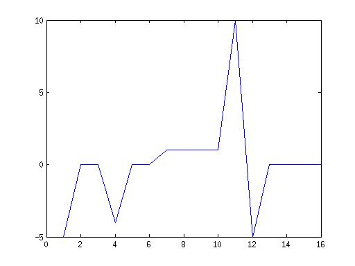

Orgional Image: [ 5 5 5 9 9 9 8 7 6 5 -5 0 0 0 0 ]
Filter 1: [-1 1]

Filter 2: [1 -1]
Filter 3: [1 0 0 1]
Filter 4: [1 0 0 -1]
Origional graph
graph with increased p
If you increase the proporsonal constant then the graph will become more unstable and ossolate around the desired value because it will keep on overshootig its desired value.